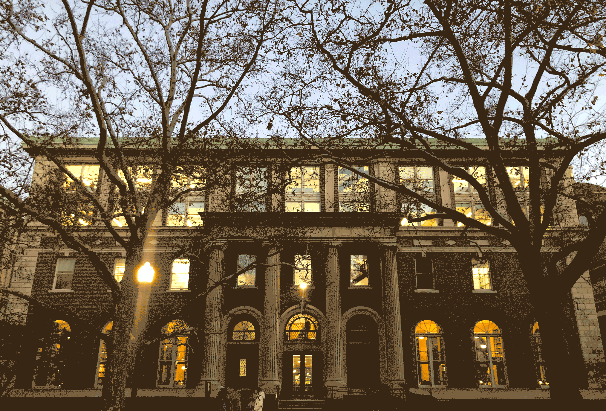

Capstone Photos



Throughout the working on this Capstone I have received a great deal of support and assistance.
I would first like to thank my supervisor, Professor Bernadette Baird-Zars , whose expertise was invaluable in formulating the research questions and methodology. Your insightful feedback and encouragement pushed me to sharpen my thinking.
I would like to thank my client Terri Matthews, the director of Town + Gown, and listener Peter Kramer, from the DCAS, for your patient support and invaluable advice, providing insightful ideas that enriched this capstone.
I would like to thank Professor Boyeong Hong for her sharing of expertise in urban informatics and sincere and valuable guidance for this capstone, which in fact has provided significant support for this capstone.
I would like to thank Dr. Wenfei Xu for her fantastic and patient guidance.
I would also like to thank Professor Celeste Layne, through her course, I have seen the beauty of UI design, which has provided me with the tools I needed to complete this capstone.
In addition, I would also like to thank Professor Dare Anne S. Brawley, whose invaluable experience in spatial analysis and interactive mapping has made this capstone more complete in both narrative and expressive terms.
I would like to thank Professor Lance Freeman for providing valuable suggestions that helped guide this capstone.
Finally, I would like to thank the online bloggers and platforms that have opened up their learning resources. Your knowledge has continued to feed my curiosity and sharpen my skills, giving me great pleasure in exploring the world beyond the courses.